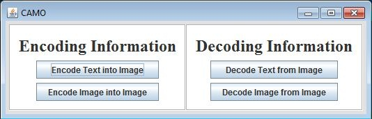
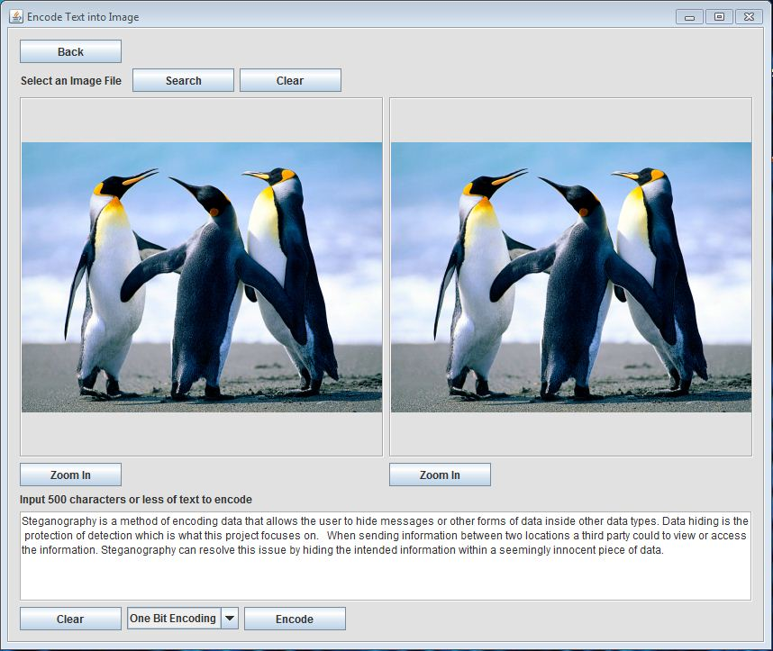
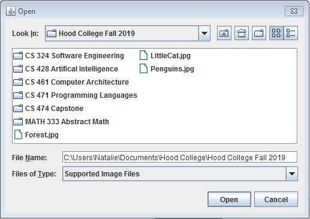
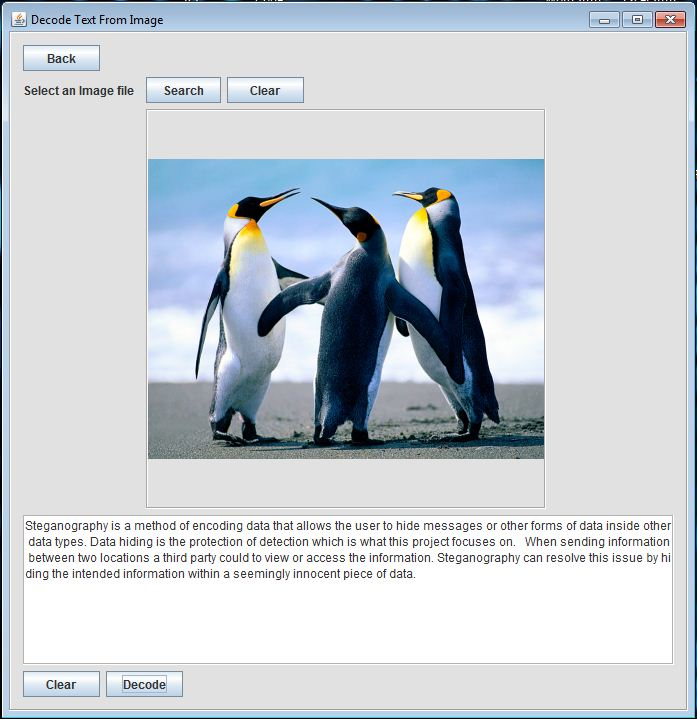
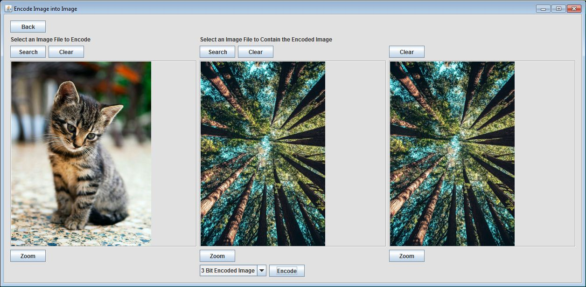
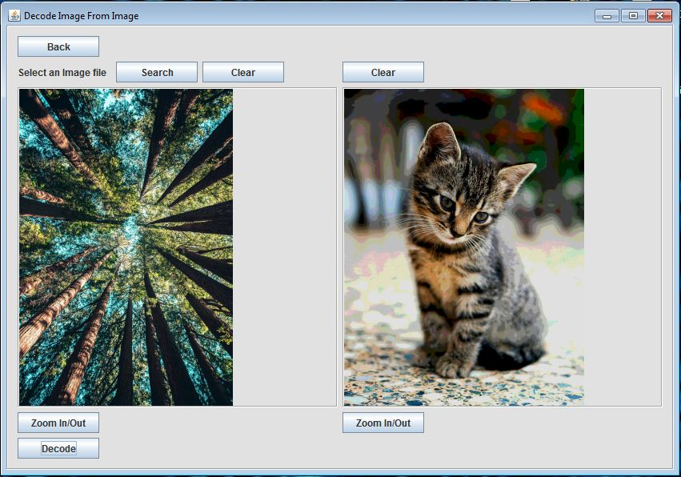
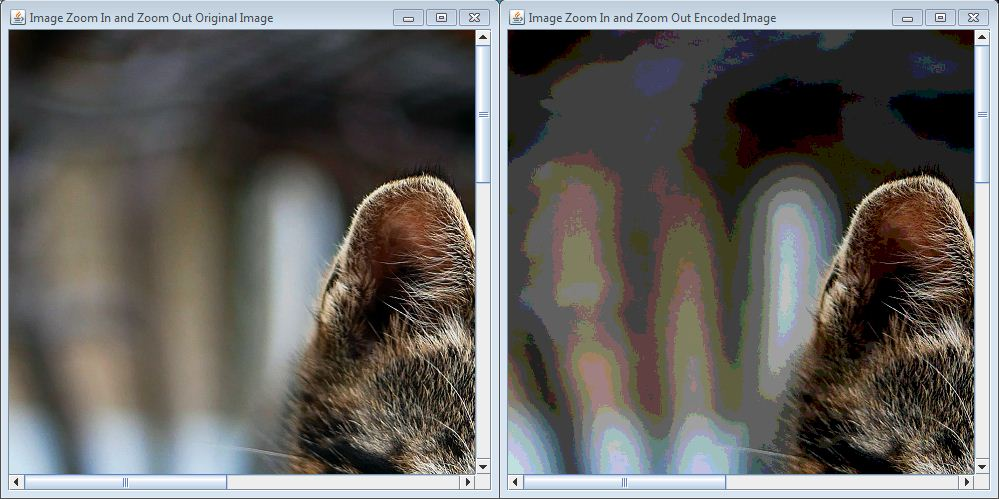

Steganography is a method of encoding data that allows the user to hide messages or other forms of data inside other data types.
There are two main types of steganography, data hiding and document marking.
Document marking is the protection of data removal by watermarking or fingerprinting.
Data hiding is the protection of detection which is what this project focuses on.
The steganography implemented in this application only performs protection against detection in images.
Steganography and encryption are often compared to one another but contain vast differences.
Steganography does not alter the hidden information, where encryption does.
When sending information between two locations a third party could to view or access the information.
Steganography can resolve this issue by hiding the intended information within a seemingly innocent piece of data.
The requirements of the application is to be able to encode and decode two kinds of information, text and images.
The text and images will be consealed with in an image.
The display of this application will show the images and text selected by the user.
There will be a ability to zoom in and out on all images.
The application will automaticly save encoded images and decoded images.
There will be a logger to save actions taken by the user.
The application should handle up to 500 characters of text to be encoded or decoded.
The design should be intuitive and user friendly, with a purposeful page layout.
Individual Pages and Functionality

MainPage:
When the program is opened, you are presented with two sections, Encoding Information and Decoding Information.
In the encoding information section there are two options, Encode Text into Image or Encode Image into Image.
In the decoding section there is also two options, Decode Text from Image or Decode Image from Image.
These options are presented as buttons, when one of these buttons is clicked it will redirect you to the input page for that option.
If you intended to select a different option there is a Back button at the top left of the screen for the input page.

Encode Text into Image:
This page is used to encode text into an image.
There is a prompt which states “Select an image file” and two buttons beside it.
The Search button will open up a file explorer where you can an image file (PNG or JPG).
Now your selection is displayed on the page, if you wish to clear this image you can either click the Search button to select another image file or click the Clear button.
In the text box input 500 characters or less of any text that you wish to be encoded into the image.
If you wish to clear the text area there is a Clear button under the text area.
There is an encoding method dropdown box which determines the method for the encoder.
The last step is to press the Encode button which takes the selected image and text, creates a new image with that text concealed within, and displays that image on the same input page.
There are two buttons labeled Zoom under the two images on the page, which can be used to examine the images.

File Explorer:
This is a file explorer to navigate the users system and allow the user to select an image from their files.
The Search button will open up the file explorer which will initially display the directory where the software is saved, in this file explorer you can select any directory to search and make a selection of an image file.
It is limited to display folders and image files to help limit clutter when searching.
When you’ve selected a file you can either double click on it or click the Open button in the file explorer.

Decode Text From Image:
This page is used to decode text from an image.
There is a prompt which states “Select an image file” and two buttons beside it.
The Search button will open up a file explorer where you can an image file (PNG or JPG).
Now your selection is displayed on the page, if you wish to clear this image you can either click the Search button to select another image file or click the Clear button.
There is an no decoding method dropdown box because there is only one method for text to image encoding at this moment.
Now that there is an image selected there is a Decode button at the bottom right of the page.
Clicking the Decode button will pass the image to the decoder which will then pass back the text displaying it in the text area.
The Clear button next to the text area will clear the text area.

Encode Image into Image:
This page is used to encode an image into an image.
There is a prompt which states “Select an Image File to Encode” and two buttons beside it.
An important note, the image which you intend to conceal must be smaller in width and height compared to the image which will contain it.
The Search button will open up a file explorer where you can an image file (PNG or JPG).
Now your selection should be displayed on the input page, if you wish to clear this image from the page you can either click the Search button to select another image file or click the Clear button.
To the right of the first prompt there is another asking for you to “Select an Image File to Contain the Encoded Image”, along with another set of Search and Clear buttons which perform the exact same process as previously described.
Now that you have both images selected and displayed, there is a drop down box used to select the method for the encoding process.
There are two methods, the “3 bit encoded image” which is the default method and the “4 bit encoded image”.
The three bit method conceals the hidden image better than the four bit method but when decoding, the hidden image has less resolution.
Once you have made a choice for the method, pressing the Encode button with pass the two images to the encoder and display the newly created image on the right side of the display.
There are three buttons labeled Zoom under the images on the page, which can be used to examine the images.

Decode Image From Image:
This page is used to decode an image from an image.
There is a prompt which states “Select an image file” and two buttons beside it.
The Search button will open up a file explorer where you can an image file (PNG or JPG).
Now your selection is displayed on the page, if you wish to clear this image you can either click the Search button to select another image file or click the Clear button.
There are two decoding methods, the method is automatically be choosen based on the encoding method used on the orgional image.
Now that there is an image selected there is a Decode button at the bottom right of the page.
Clicking the Decode button will pass the image to the decoder which will then pass back the imasge displaying it on the right.
The Clear button above to the image area will clear the image off the page.
There are two buttons labeled Zoom under the images on the page, which can be used to examine the images.

There are buttons labeled Zoom under the images on most of the pages,
clicking one will open a new file viewer for that image and allow you to inspect the image.
To zoom in or out of the file viewer for that image use the scroll wheel on your mouse.
This provides a method to compare images before and after encoding ad decoding.
The main difference between the two methods for encoding and decoding images in this project is how many bits are designated for the hidden image.
Think of an image file as a XY grid of pixels.
Each pixel has four characteristics which vary in value; transparency, red, blue, and green.
And each of these characteristics have one byte (or 8 bits) which conveys their value; changing their value changes the image visually.
In a byte one side is more significant; changing the most significant bits makes a huge change in the image and vice versa with the least significant bits.
Now that we have a understanding of how an image is comprised, we can use this to hide information.
If we want to store the data for two images in one image we can try and split the data storage evenly by giving 4 bits to the cover image and 4 bits to the hidden image for each of the characteristics (transparency, red, blue, and green).
This is what out project refers to as the 4 bit method, the cover image will have the 4 most significant bits, and the 4 remaining least significant bits is for the hidden image.
When the image is displayed it will look like the cover image, but inspecting the cover image may reveal that there is a secondary image (See Figure 1).
One way to reduces this is to keep more of the cover image and less of the hidden image, and we attempt this with the 3 bit method.
The cover image will have the 5 most significant bits, and the 3 remaining least significant bits is for the hidden image.
When the image is displayed now it will have less of the hidden image peeking through.
The downside to this is that when the hidden image is decoded, since it has less bits it has less quality (See Figure 2).
Finally one way to better conceal an image is to choose an appropriate cover image, with similar color and texture (See Figure 3).